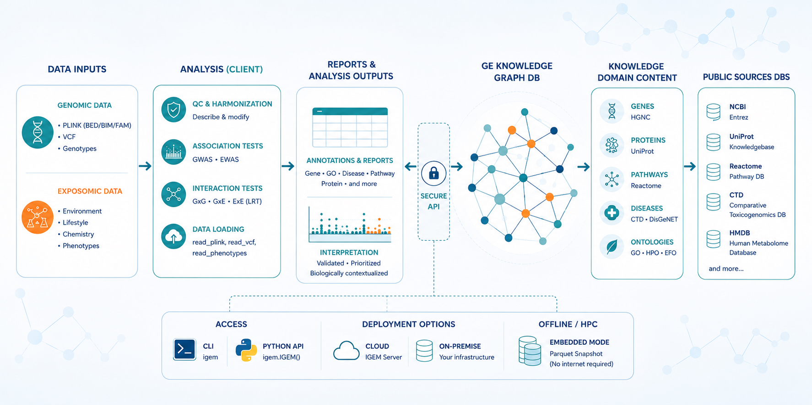
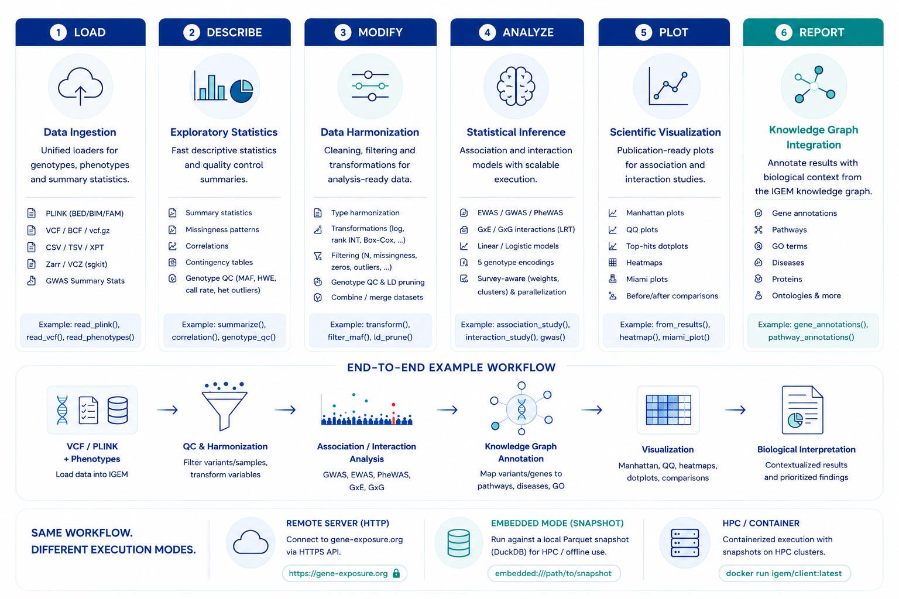

IGEM¶
Biologically-informed interaction filtering for GWAS and EWAS.
IGEM is an open-source platform that couples a curated biomedical knowledge graph with a Python analysis client to constrain the search space of gene–gene (GxG) and gene–environment (GxE) interaction hypotheses before multiple-testing correction is applied. Statistical power is focused on candidate pairs with biological grounding instead of being diluted across combinatorial noise.
Cohort genotypes and phenotypes never leave the analyst’s machine — only entity identifiers are exchanged with the IGEM server.
The challenge¶
Pairwise interaction screens collapse under their own combinatorics. A published GxE study of type 2 diabetes in the eMERGE Network (Hall et al., Nature Communications 2017) considered 1 million SNPs and ≈ 300 exposures: an unfiltered scan would have evaluated 3 × 10⁸ hypotheses, with a Bonferroni-corrected significance threshold of 1.67 × 10⁻¹⁰. At that scale, most true effects are statistically invisible even when the underlying biology is well established.
Filtering post-hoc by p-value does not recover power. Filtering a priori by prior biological evidence does — an approach established for gene–gene interactions via Biofilter (Bush et al. 2009; Pendergrass et al. 2013) and extended by IGEM to GxE and ExE.
How IGEM addresses it¶
Three domains — Genomics, Exposome, Knowledge — and 13 entity types unify gene, variant, protein, pathway, GO term, disease, chemical, phenotype, metabolite, and exposure data from HGNC, UniProt, Reactome, GO, CTD, HMDB, PharmGKB, NHANES, and other authoritative sources.
Interaction hypotheses are restricted to pairs supported by known relationships in the graph (GxG, GxE, ExE, GxK, ExK), reducing the multiple-testing burden by orders of magnitude before the first model is fit.
GWAS, EWAS, and phenotype workflows run entirely on the analyst’s machine or HPC node. Only entity identifiers are exchanged with the server — raw genotypes and clinical data stay where they are.
Architecture¶
Three independently versioned artefacts, designed to be deployed together or separately.
igem — analysis clientPython package distributed on PyPI. Runs on a laptop or HPC node. Provides data loading (PLINK, VCF, Zarr, phenotype CSV, GWAS sumstats), descriptive statistics, GWAS / EWAS pipelines, and a transport-agnostic facade for knowledge-graph queries.
igem-server — knowledge backendFastAPI service backed by PostgreSQL. Hosts the curated graph, the ETL pipelines that maintain it, an NLP module for entity normalization, and the report endpoints consumed by the client.
Versioned Parquet export of the graph. Loaded by the client in embedded mode for HPC environments without network egress, ensuring full reproducibility of any analysis tied to a snapshot identifier.
A reference deployment ships as a Docker / Apptainer image on GHCR. See Concepts for the architectural model, or Container deployment for the practical deployment guide.
End-to-end, the three components sit inside a wider pipeline that connects analyst-side data to a curated knowledge graph backed by public sources, accessible from the CLI, Python, or in fully offline mode:


A complete pipeline for association and interaction analyses¶
IGEM covers every stage of an association or interaction study — from raw genomic and exposomic data all the way to publication-ready figures and biological interpretation — without forcing the analyst to glue together a chain of single-purpose tools. The same Python session handles loading, exploration, cleaning, statistical testing, multiple-testing correction, visualization, and knowledge-graph annotation, with the same code path running on a laptop, in the cloud, or on an HPC node.


The client is organized as six capability modules, each with its own reference page in the User Guide — IGEM; end-to-end recipes that combine them live in the Cookbook.
igem.data — LoadingRead PLINK / VCF / Zarr genotypes (lazy), phenotype CSV / TSV / XPT with role metadata, generic tables, and GWAS sumstats from PLINK 2, REGENIE, BOLT-LMM, or GWAS Catalog into a canonical schema.
igem.describe — DescribingSummary statistics, missingness, type inference, skewness, correlations, contingency tables, group-stratified summaries, and genotype QC metrics (call rate, MAF, HWE, het rate).
igem.modify — ModifyingType harmonization, value transformations (log, RINT, Box-Cox, z-score), outlier removal, structural filters, multi-frame assembly, and the standard genotype QC pipeline including LD pruning.
igem.analyze — AnalyzingAssociation studies (GWAS, EWAS, PheWAS), GxE / GxG interaction tests via likelihood-ratio (LRT), survey-aware modeling with weights, strata, and clusters, and built-in Bonferroni / FDR correction.
igem.plot — VisualizingPublication-ready figures for association and interaction studies: Manhattan plots (Bonferroni / FDR thresholds), QQ plots, top-hits dotplots, heatmaps, Miami plots, before / after comparisons.
igem.reports — Knowledge-graph reportsAnnotate results with biological context from the IGEM knowledge graph: gene, disease, pathway, protein, and ontology (GO, HPO, EFO) annotations, queried over HTTP or in embedded mode. See the full report catalog.
Lineage¶
IGEM is the third generation of an integrated software line developed by the Hall Lab for high-dimensional interaction research:
PLATO (Hall et al., Nature Communications 2017) — an integrated framework for GxG, GxE, and phenome-wide association studies, applied to type 2 diabetes in the eMERGE Network.
CLARITE (Lucas et al., Frontiers in Genetics 2019) — a high-throughput pipeline for exposome quality control and environment-wide association studies.
IGEM (this project) — extends the knowledge-driven filtering approach previously established for GxG via Biofilter to GxE and ExE, combining the analytical surface of PLATO and CLARITE with a curated cross-domain knowledge graph.
The methodology was originally proposed to the NIH ECHO program (Environmental influences on Child Health Outcomes) to support interaction studies across cohorts of 50,000+ children with neurodevelopmental outcomes, and is now maintained as a general-purpose platform applicable to any GxE / ExE study.
Choose your path¶
Load data, run phenotype analyses, GWAS / EWAS, query the graph, orchestrate jobs in containers and on HPC.
Drive the igem-server programmatically — database lifecycle,
ETL pipelines, NLP, and custom reports.
Stand up the server, run the ETL, generate snapshots, deploy containers, monitor production.
End-to-end recipes that combine the client and server in realistic research workflows.
Quick start¶
pip install igem
from igem import IGEM
with IGEM() as igem:
print(igem.health())
The five-minute tour — installing IGEM, connecting to the public server, and running your first knowledge-graph report — is in the Quickstart.
Project status¶
Note
IGEM is in early access. The client (igem 2.1.0) is in beta and
the server (igem-server 0.3.0) is in alpha; APIs may evolve before
the 1.0 release. Authentication is intentionally disabled during this
phase to keep the focus on the core analytical surface — production
deployments should be placed behind a network boundary.
IGEM is released under the MIT license. Releases follow semantic versioning per artefact; see the Release process for the tagging conventions and CI guarantees.